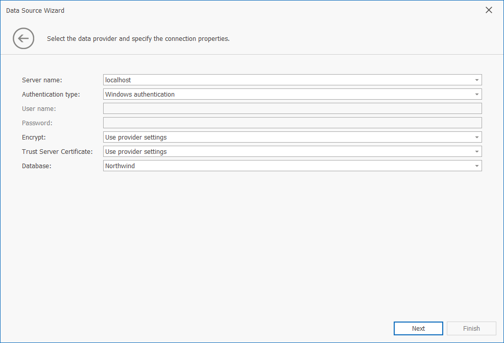

Bind a Report to a Stored Procedure
This tutorial demonstrates how to bind a report to a stored procedure provided by an SQL data source:
Click the report's smart tag. In the invoked actions list, expand the drop-down menu for the Data Source property and click Add New DataSource.

On the first page of the invoked Data Source Wizard, specify whether you want to use an existing data connection or create a new data connection from scratch. Select the first option to create a new connection and click Next.

On the next page, select Microsoft SQL Server and click Next to proceed.

On the next page, configure connection parameters. Depending on the data provider selected, it may be necessary to specify additional connection options (such as authentication type and database name) on this page.

To proceed to the next wizard page, click Next.
On the next page, you can choose which tables, views and/or stored procedures to add to the report. Expand the Stored Procedures category, select the required stored procedure from the list of available stored procedures and click Next.

Then, the wizard generates query parameters for each stored procedure parameter. The next wizard page presents the generated query parameters. You can assign a static value or an expression to a parameter. In addition, you can map a report parameter to a query parameter. This is helpful when you specify parameter values in the report's Preview. For details on how to configure query parameters, refer to the Specify Query Parameters topic.
Click the Preview button and select a query to preview the result of the stored procedure execution with the specified parameters.

The following image demonstrates the Data Preview displaying the resulting data sample. Click Close to exit the preview.

If a stored procedure returns multiple result tables, the Data Preview window displays a drop-down list with all these tables, so you can choose and preview any of them.
If a stored procedure accepts query parameters, the procedure is executed with the following parameter values when you click Preview:
- If a query parameter value is static, this static value is used.
- If a query parameter value is an expression, the value of this expression is used.
- If a query parameter is mapped to a report parameter, the default value of this report parameter is used.
Click Finish to exit the wizard.